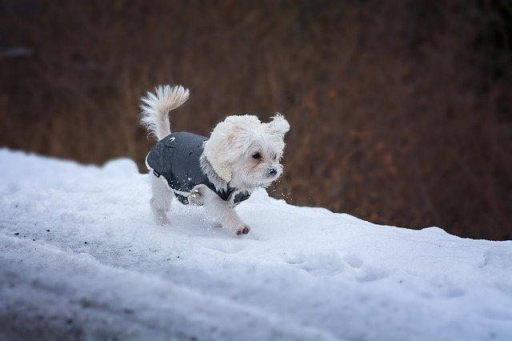
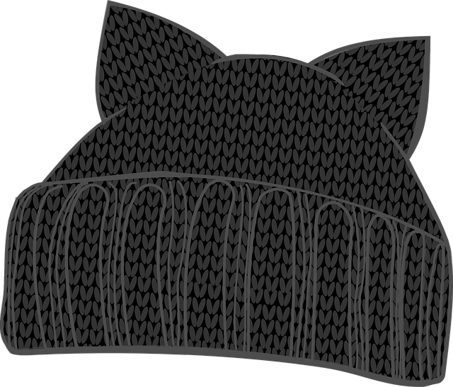
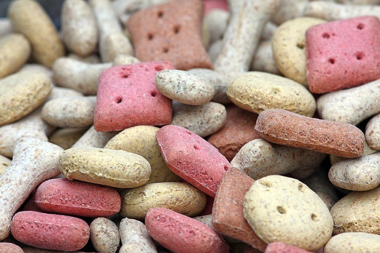

Dog Apparel & Food
Here at Durham House of Pets, we pride ourselves on how we make your dog feel. Our first class clothing line, as well as our masterful recipes, will help cater to your dog. Our product line is unlike anything else in the state of New Hampshire.
Dog Apparel
|  | The Hot Dog | A wintercoat, even if your dog is covered in fur, you want to make sure that it is comfortable at all times. |
|  | Fit 4 A Dog | A stylish beanie that comes with built-in ears. A perfect way to keep that head happy! |
| The Harness | A leash that doesn't put constant pressure on your dog's neck. Use the harness as it distributes the pressure around the body and makes for a much happier dog. |
Dog Food
 | Mixed Medley with Chopped Steak | A delicious favorite at our store. A great meat along with mixed veggies. | |
 | Grilled Chicken with Grains | A healthy seerving of grains to go along with delicious chunks of grilled chicken. |
|  | Doggy Dessert | Even dogs have to enjoy dessert. The Doggy Dessert is a great treat recieved well by all types of dogs. |